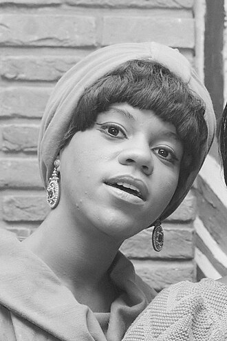

Florence Ballard
Florence Glenda Chapman was an American singer and a founding member of the Motown vocal female group the Supremes. She sang on 16 top 40 singles with the group, including nine number-one hits. After being removed from the Supremes in 1967, Ballard tried an unsuccessful solo career with ABC Records, before she was dropped from the label at the end of the decade. After struggling with alcoholism, depression and poverty for several years, she was in the midst of a musical comeback when she died of a heart attack in February 1976 at the age of 32. Ballard's death was considered by one critic as "one of rock's greatest tragedies". Ballard was the first woman posthumously inducted to the Rock and Roll Hall of Fame as a member of the Supremes in 1988.
Complete Discography & Tracklists (0)
No studio album records registered.